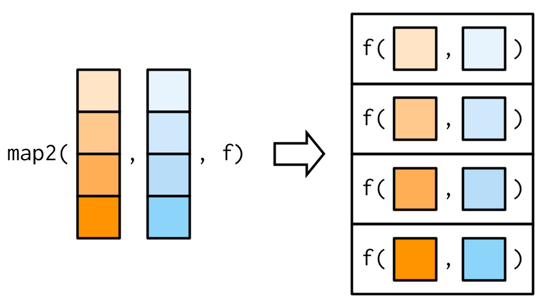
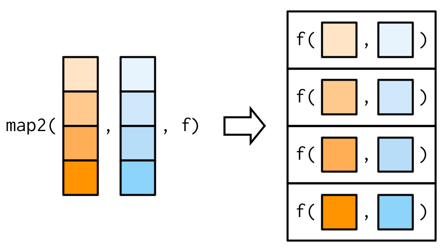

Chapter 6 Functional Programming
6.1 What is functional programming?
Conceptually functional programming philosophy is based on lambda calculus. Lambda calculus is a framework developed by Alonzo Church6 to study computations with functions.
Functional programming is a programming paradigm in which we try to bind everything in pure mathematical functions style. It is a declarative type of programming style. Its main focus is on what to solve in contrast to an imperative style where the main focus is how to solve. For a more elaborated definition readers may see this wikipedia link. Simply putting functional programming is like doing something repeatedly but in declarative style. Here, functions are the primary method with which we carry out tasks. All actions are just implementations of functions we are using.
Functional programming use high order functions. A high order function is actually a function that accepts a function as an argument, or returns a function; in short, function that operates upon a function. We have already seen one such example may be without noticing it, args() function take a function as an argument and in turn return its arguments.
Let us learn a bit more here.
6.1.1 Usage of functional programming in R
Strictly speaking R is not a functional programming language. But we have already seen that one of the greatest strengths of R is parallel operations on vectors. In fact we need functional programming where concurrency or parallelism is required. Till now we have seen that most of the functions work on all atomic objects (vectors, matrices, arrays, etc.), but what about working of these functions on recursive objects i.e.lists? Check this example (in your console)-
list1 <- list(50000, 5000, 56)
sum(list1)Of course, we can solve the above problem by using for loops. See
list1 <- list(50000, 5000, 56)
# for loop strategy
x <- c()
for(i in seq_along(list1)){
x[i] <- list1[[i]]
}
sum(x)## [1] 55056Consider another list, where we want to calculate mean of each element of that list.
Of course, we may use a for loop again, but in R these operations can be done easily with apply group of functions, which are one of the most famous and most used features in R.
6.2 apply family of functions
First of these functions is apply() which works on matrices/data frames.
6.2.1 Function apply()
The basic syntax of apply is
apply(m, MARGIN, FUN, f_args)where
mis the matrixMARGINis the dimension. If we want to apply function to each row then use1or else if it is to be column-wise use2FUNis the desired function which we want to applyf_argsare the optional set of arguments, if needed to be supplied tofun.
An illustrative construction of apply function can be seen in 6.1.

Figure 6.1: Illustration of function apply
Check this example
## [,1] [,2]
## [1,] 1 6
## [2,] 2 7
## [3,] 3 8
## [4,] 4 9
## [5,] 5 10## [1] 3.5 4.5 5.5 6.5 7.5Note: rowMeans(mat) in above example would have given similar results, but for sake of simplicity we have provided a simplest example.
Further note that we may also write our own customised function in the argument. See this another example, where we will take sum of squares of each row. We may define our own custom function for the purpose and then apply it.
## [1] 37 53 73 97 125The need to writing a custom function before hand may be eliminated if the function so defined is not be used further. We may write anonymous function directly in the apply syntax -
## [1] 37 53 73 97 125In R version 4.1 and onwards R has devised shorthand style of defining inline custom functions, where we can write backslash i.e.\ instead of writing function. We could have written above expression as-
apply() need not necessarily output vectors only
If FUN applied on rows/columns of matrix outputs vector of length more than 1, the output will be in matrix format. But the thing to note here is that matrix will be displayed columnwise always irrespective of fact whether MARGIN is 1 or 2. As an easy example we could have shown this using function like sqrt, but apply(matrix, MARGIN, sqrt) will work like sqrt(matrix) only. So lets take a different example. Suppose we want to calculate column-wise cumulative sum in a given matrix.
## [,1] [,2]
## [1,] 1 6
## [2,] 3 13
## [3,] 6 21
## [4,] 10 30
## [5,] 15 40The output here is eaxctly what was desired. But what if, our requirement was to take row-wise cumulative sum?
## [,1] [,2] [,3] [,4] [,5]
## [1,] 1 2 3 4 5
## [2,] 7 9 11 13 15It may now be noticed that the output is actually transpose of what we were expecting. Actually the output of each iteration of apply function is displayed in one column always. Let us check our understanding with one more example taking function which may give output that is not dependent on input vector length.
## [,1] [,2] [,3] [,4] [,5]
## [1,] 1 7 8 4 10
## [2,] 6 2 8 4 10
## [3,] 1 2 3 4 10
## [4,] 1 2 3 9 5Thus we may conclude that-
- If
FUNoutputs a scalar, the output ofapplywill be a vector of length equal to- number of
rowsin input matrix given thatMARGINselected in 1, - number of
columnsin input matrix given thatMARGINselected in 2.
- number of
- if
FUNoutputs a vector(of length >1) then output ofapplywill be a matrix having number of columns equal to -- number of
rowsin input matrix given thatMARGINselected in 1, - number of
columnsin input matrix given thatMARGINselected in 2.
- number of
These have been tabulated in table 6.1.
| Input matrix \(m*n\) | MARGIN = 1 |
MARGIN = 2 |
|---|---|---|
| FUN gives scalar | Vector size \(m\) | Vector size \(n\) |
| FUN gives vector size \(p\) | Matrix \(p*m\) | Matrix \(p*n\) |
We may thus have to be careful while getting the output from apply function as it may lead to introduction of bug in our code.
6.2.2 Function lapply()
Another cousin of apply is lapply which can thought of apply to lists. So as the name suggests it is applied on lists instead of matrices. Now since data frame is also a list lapply can be applied on these. The basic syntax of lapply() is -
lapply(l, FUN, f_args)where
lis the listFUNis the desired function which we want to applyf_argsare the optional set of arguments, if needed to be supplied tofun.
It may be noted that MRAGIN argument is not available here. See these examples.
## $V1
## [1] 15
##
## $V2
## [1] 40Now you may have noticed two things here -
- The output is of
listtype. - Unlike
applyasMARGINis not passed/available here, it appliesFUNto every element of list. When we consider anydata.frameas a list its each column is a separate element of that list. SoFUNcannot be applied torowsin adata.frame.
Thus lapply() -
- loops over a list, iterating over each element in that list
- then applies the function
FUNto each element - and then returns a list.
Example-2: Lets try to find type of each column in a given data frame.
## $Sepal.Length
## [1] "double"
##
## $Sepal.Width
## [1] "double"
##
## $Petal.Length
## [1] "double"
##
## $Petal.Width
## [1] "double"
##
## $Species
## [1] "integer"Similar to apply we can define FUN inline here (anonymously) also. Example-3:
## $V1
## [1] 1 4 9 16 25
##
## $V2
## [1] 36 49 64 81 100Example-4:
## [[1]]
## [1] 2.655087
##
## [[2]]
## [1] 3.721239 5.728534
##
## [[3]]
## [1] 9.082078 2.016819 8.983897
##
## [[4]]
## [1] 9.4467527 6.6079779 6.2911404 0.6178627Note that even if lapply is applied over a vector, it returns a list only.
6.3 Other loop functions
6.3.1 Function replicate()
Function replicate()(replicate) is used for repeated evaluation of an expression. Syntax is
replicate(n, expr, simplify = "array")where -
nis integer denoting the number of replicationsexpris the expression to evaluate repeatedlysimplifytakes either character or logical to value to indicate whether the results should be simplified.
Example:
set.seed(123)
# Default value of simplify will simplify the results as much possible
replicate(5, runif(3))## [,1] [,2] [,3] [,4] [,5]
## [1,] 0.2875775 0.8830174 0.5281055 0.4566147 0.6775706
## [2,] 0.7883051 0.9404673 0.8924190 0.9568333 0.5726334
## [3,] 0.4089769 0.0455565 0.5514350 0.4533342 0.1029247## [[1]]
## [1] 0.89982497 0.24608773 0.04205953 0.32792072 0.95450365
##
## [[2]]
## [1] 0.8895393 0.6928034 0.6405068 0.9942698 0.6557058
##
## [[3]]
## [1] 0.7085305 0.5440660 0.5941420 0.2891597 0.14711366.3.2 Function split()
The split()(split() function) function takes object (vector or other) and splits it into groups determined by a given factor. The basic syntax is-
split(x, f, drop=FALSE, ...)where
xis input object -vectororlistordata.framefis a factor or a list of factors. If a factor is not provided, it will be coerced to factor.dropargument indicates whether empty factors should be dropped.
Example: (To divide the given list by alternate elements)-
## $`1`
## [1] "A" "C" "E" "G" "I" "K" "M" "O" "Q" "S" "U" "W" "Y"
##
## $`2`
## [1] "B" "D" "F" "H" "J" "L" "N" "P" "R" "T" "V" "X" "Z"Example-2: Find out sum of every odd and even number from 1:100-
## $`0`
## [1] 2550
##
## $`1`
## [1] 2500Example-3: Find out mean of mpg column splitting the mtcars data by cyl
## 4 6 8
## 26.66364 19.74286 15.100006.3.3 tapply()
The tapply() function(tapply() function) can be thought of combination of split and sapply for vectors, exactly as used in above example. It actually applies the function over subsets of a given vector. The basic syntax is-
tapply(X, INDEX, FUN = NULL, ..., default = NA, simplify = TRUE)Where -
Xis a vectorINDEXis factor or list of factorsFUNis function to be applied...are other arguments, if any, ofFUNto be passedsimplifyif TRUE simplifies the result.
See this example
## 4 6 8
## 26.66364 19.74286 15.10000Needless to say if simplify is FALSE the results will not be simplified. See this example-
# month-wise mean of temperatures from `airquality` data
tapply(airquality$Temp, airquality$Month, mean, simplify = FALSE)## $`5`
## [1] 65.54839
##
## $`6`
## [1] 79.1
##
## $`7`
## [1] 83.90323
##
## $`8`
## [1] 83.96774
##
## $`9`
## [1] 76.96.3.4 by() function
This(by() function) works something like tapply but with the difference that input object here is data.frame. See this example
## mtcars$cyl: 4
## mpg cyl disp hp drat wt qsec vs am gear carb
## Datsun 710 22.8 4 108.0 93 3.85 2.320 18.61 1 1 4 1
## Merc 240D 24.4 4 146.7 62 3.69 3.190 20.00 1 0 4 2
## Merc 230 22.8 4 140.8 95 3.92 3.150 22.90 1 0 4 2
## Fiat 128 32.4 4 78.7 66 4.08 2.200 19.47 1 1 4 1
## Honda Civic 30.4 4 75.7 52 4.93 1.615 18.52 1 1 4 2
## Toyota Corolla 33.9 4 71.1 65 4.22 1.835 19.90 1 1 4 1
## ------------------------------------------------------------
## mtcars$cyl: 6
## mpg cyl disp hp drat wt qsec vs am gear carb
## Mazda RX4 21.0 6 160.0 110 3.90 2.620 16.46 0 1 4 4
## Mazda RX4 Wag 21.0 6 160.0 110 3.90 2.875 17.02 0 1 4 4
## Hornet 4 Drive 21.4 6 258.0 110 3.08 3.215 19.44 1 0 3 1
## Valiant 18.1 6 225.0 105 2.76 3.460 20.22 1 0 3 1
## Merc 280 19.2 6 167.6 123 3.92 3.440 18.30 1 0 4 4
## Merc 280C 17.8 6 167.6 123 3.92 3.440 18.90 1 0 4 4
## ------------------------------------------------------------
## mtcars$cyl: 8
## mpg cyl disp hp drat wt qsec vs am gear carb
## Hornet Sportabout 18.7 8 360.0 175 3.15 3.44 17.02 0 0 3 2
## Duster 360 14.3 8 360.0 245 3.21 3.57 15.84 0 0 3 4
## Merc 450SE 16.4 8 275.8 180 3.07 4.07 17.40 0 0 3 3
## Merc 450SL 17.3 8 275.8 180 3.07 3.73 17.60 0 0 3 3
## Merc 450SLC 15.2 8 275.8 180 3.07 3.78 18.00 0 0 3 3
## Cadillac Fleetwood 10.4 8 472.0 205 2.93 5.25 17.98 0 0 3 46.3.5 Specifying the output type with vapply()
Function vapply()(vapply() function) works exactly like sapply() described above, with only difference that type of return value (output) has to be specifically provided through FUN.VALUE argument. Its syntax is -
vapply(X, FUN, FUN.VALUE, ..., USE.NAMES = TRUE)- In the argument
FUN.VALUEwe have to provide the format type of output. See this example.
## mpg cyl disp hp drat wt qsec vs am gear
## 33.900 8.000 472.000 335.000 4.930 5.424 22.900 1.000 1.000 5.000
## carb
## 8.000Through FUN.VALUE = double(1) we have specifically provided that our output should be of double type with length 1. So in case we have to find out range of each column-
## mpg cyl disp hp drat wt qsec vs am gear carb
## [1,] 10.4 4 71.1 52 2.76 1.513 14.5 0 0 3 1
## [2,] 33.9 8 472.0 335 4.93 5.424 22.9 1 1 5 8If we will try this function on a dataset having mixed type columns like iris dataset, vapply will throw an error.
vapply(iris, range, FUN.VALUE = double())6.4 Functional Programming in purrr
Package purrr7, which is part of core tidyverse, enhances Rs functional programming (FP) toolkit by providing a complete and consistent set of tools for working with functions and vectors.
##
## Attaching package: 'purrr'## The following object is masked from 'package:magrittr':
##
## set_names6.4.1 Iterate over single list/vector with map_*() family of functions
This package has many families of functions; and most primary family is map family of functions. map_*() works nearly similar to vapply where we can control the type of output. The syntax style of each of these functions is nearly same, where these accept one object (list or vector) as .x argument, one function (or alternatively a formula) as .f argument; and outputs an object of specified type.
Example
## $mpg
## [1] 642.9
##
## $cyl
## [1] 198
##
## $disp
## [1] 7383.1
##
## $hp
## [1] 4694
##
## $drat
## [1] 115.09
##
## $wt
## [1] 102.952
##
## $qsec
## [1] 571.16
##
## $vs
## [1] 14
##
## $am
## [1] 13
##
## $gear
## [1] 118
##
## $carb
## [1] 90Note that output type is list. If the output can be simplified to an atomic vector we can use either of these functions depending upon the output type of that vector.
map_lglforlogicalformatmap_intforintegerformatmap_dblfordoubleformatmap_chrforcharacterformat
map always return a list.
See these further examples.
Example-1:
## mpg cyl disp hp drat wt qsec vs am gear
## 33.900 8.000 472.000 335.000 4.930 5.424 22.900 1.000 1.000 5.000
## carb
## 8.0006.4.2 Iterate over two or more lists/vectors using map2_*()/ pmap_*() family
So far we have seen that map_*() family of functions are used to iterate over elements of a list. Even if extra lists/vectors are provided as extra arguments, these are used as it is, in each iteration, as can be seen in first illustration in figure8 6.2.
 

Figure 6.2: Working of map vs map2 family of functions Source Advanced R by Hadley Wickham
In order to iterate over two vectors/lists, we will however, need map2_*() family of functions (Refer second illustration in figure 6.2).
See the following example
## [[1]]
## [1] 11
##
## [[2]]
## [1] 24
##
## [[3]]
## [1] 39Similarly, to iterate over multiple lists we will use pmap_*(), with the only difference being that here all the vectors/list should be collectively passed on to pmap in a list. This can be better understood with the illustration used by Hadley Wickham in his book. For reference see figure 6.3.


Figure 6.3: Working of pmap family of functions Source Advanced R by Hadley Wickham
Alan Turing, who created Turing machine which in turn laid the foundation of imperative programming style, was a student of Alonzo Church.
Source: Advanced R by Hadley Wickham